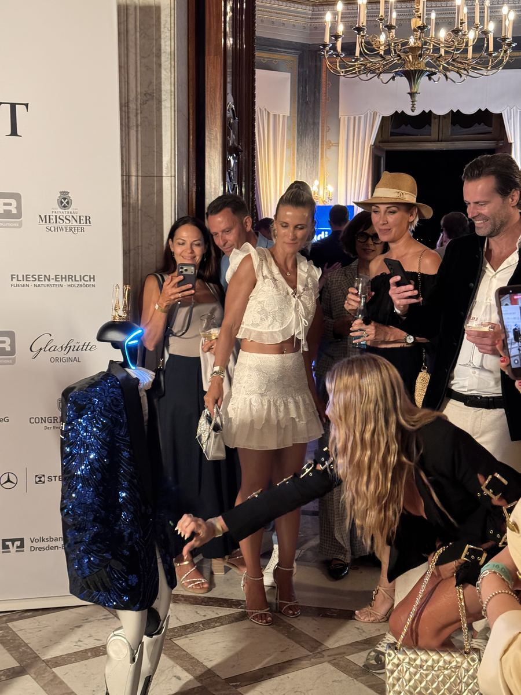
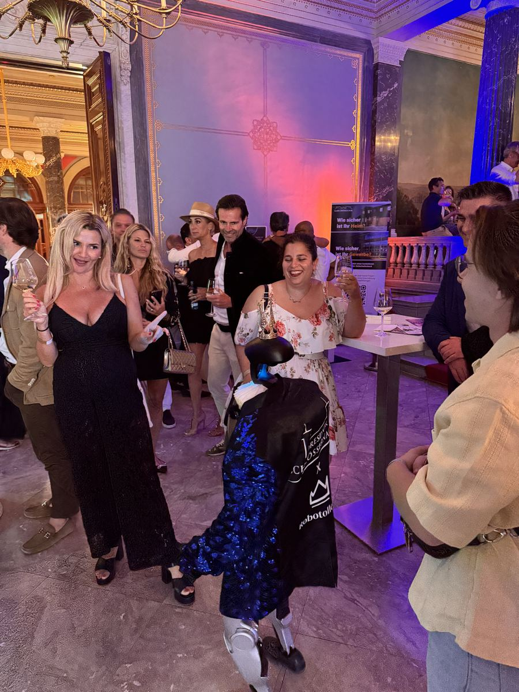

- Strona główna
- Blog
- Zabawy weselne
Przewodnik eventowy · Wesele
Zabawy weselne dla gości: 40 pomysłów ze smakiem i bez wodzireja
Zabawy weselne dzielą gości na dwa obozy: tych, którzy na nie czekają, i tych, którzy uciekają do toalety, gdy wodzirej sięga po mikrofon. Da się pogodzić oba — jeśli zabawy są krótkie, dobrowolne i bez zawstydzania. 40 pomysłów dla wszystkich gości, dla dzieci, na oczepiny i na wesele bez wodzireja, plus 20 pytań do pary młodej.

Najczęstsze frazy, jakie ludzie wpisują w wyszukiwarkę przy tym temacie, mówią wszystko: „zabawy weselne ze smakiem”, „z klasą”, „na poziomie”, „bez żenady”. Goście nie mają nic przeciwko zabawom — mają coś przeciwko wyciąganiu na środek sali i zadaniom, które kogoś ośmieszają. Ta lista powstała z tą zasadą na pierwszym miejscu. Szerszy wybór atrakcji na wieczór (fotobudka, pokazy, strefy) jest w poradniku atrakcje na wesele.
Pięć zasad dobrej zabawy weselnej
- Dobrowolność. Zaproszenie, nie wezwanie. Kto nie chce, patrzy — i też się bawi.
- Krótko. 5–10 minut na zabawę, 30–45 minut na oczepiny, mniej niż godzina zabaw w całym wieczorze.
- Bez ośmieszania. Żadnych zadań, po których ktoś wraca do stołu czerwony. Żartem może być sytuacja, nie człowiek.
- Dla wszystkich pokoleń. Babcia i kuzyn z liceum powinni móc wejść w tę samą zabawę.
- Z planem. Zabawy wpisane w harmonogram między parkietem a jedzeniem, nie „jak będzie przerwa”.
Zabawy weselne dla wszystkich gości (1–10)
- Pociąg weselny. Para prowadzi, goście doczepiają się po drodze, pociąg objeżdża salę i wraca na parkiet. Najprostszy sposób, żeby wszyscy wstali od stołów.
- Belgijka. Taniec w kole z prostymi krokami i zmianą partnera. Uczy się go w minutę, tańczą trzy pokolenia.
- Wycieczka do zoo. Prowadzący opowiada historię, a każdy stół ma swoje zwierzę i odgłos. Gdy pada nazwa zwierzęcia, stół reaguje. Klasyk, który działa na każdej sali.
- Krzesła muzyczne dla dorosłych. Z nagrodą od pary dla zwycięzcy. Krótko, głośno, bez przegranych, którzy czują się źle.
- Taniec z miotłą. Osoba z miotłą przekazuje ją komuś i zabiera mu partnera; gdy muzyka staje, kto ma miotłę, odpada. Dobre na rozkręcenie parkietu.
- Balony między partnerami. Pary tańczą z balonem między czołami albo plecami; kto upuści, odpada.
- Buty w górę. Para siada plecami do siebie, w rękach ma po jednym bucie swoim i partnera. Prowadzący czyta pytania („kto pierwszy powiedział kocham”), para podnosi but tego, kogo dotyczy odpowiedź. Lista pytań niżej.
- Bingo weselne. Karty z hasłami na stołach, goście zbierają podpisy. Rozmowy między stołami zaczynają się same.
- Quiz stołów o parze. Każdy stół to drużyna, dziesięć pytań, odpowiedzi na kartach, wyniki przy torcie.
- Zdjęcie całej sali. Jedno zadanie: wszyscy w kadrze z balkonu lub z drabiny fotografa, na trzy. Nie zabawa, a jednak moment.
Zabawy śmieszne, ale ze smakiem (11–18)
- Kalambury weselne. Hasła ze ślubu i z historii pary, dwie drużyny, trzy rundy po dwie minuty.
- Taniec pokoleń. Najstarsza para na sali uczy wszystkich kroku ze swojego wesela. Wzruszające i zabawne jednocześnie.
- Konkurs par tanecznych. Jury: para młoda. Kategorie: najbardziej energiczna para, najbardziej romantyczna, najbardziej kreatywna. Każdy coś wygrywa.
- Lip sync stołów. Każdy stół dostaje piosenkę i 30 sekund na wykonanie „z playbacku”. Sala głosuje oklaskami.
- Życzenia w rymach. Chętni mają 30 sekund na życzenia wierszem. Nagroda za najlepszy rym — od pary.
- Limbo. Pod poprzeczką coraz niżej. Zabawa dla odważnych, widowisko dla reszty.
- Gorące krzesło świadków. Świadkowie odpowiadają na pytania gości o parę. Prowadzący filtruje pytania — to zabawa, nie przesłuchanie.
- Wyścig w workach dla dorosłych. W plenerze, z drużynami rodzin. Nikt nie zapomni teścia w worku.
Zabawy weselne dla dzieci (19–24)
- Kolorowanki ślubne na stołach. Kredki i rysunki pary do pokolorowania; prace trafiają do księgi gości.
- Polowanie na skarby. Lista rzeczy do znalezienia na sali („coś niebieskiego”, „osoba w okularach”), nagrody dla wszystkich.
- Taniec z balonami. Dzieci na parkiecie z balonami, gdy muzyka staje — balon w górę.
- Bańki mydlane. Maszyna do baniek przy pierwszym tańcu i na dworze; dzieci są zajęte na pół godziny.
- Mali fotografowie. Aparaty jednorazowe dla dzieci z zadaniem: zrób zdjęcie każdemu, kto ma krawat.
- Kącik z animatorem. Animator na weselu kosztuje średnio 900 zł za 3–4 godziny (cenauslug.pl, 2026). Dla rodziców to zabawa numer jeden, choć nie biorą w niej udziału.
Zabawy na oczepiny (25–32)
Oczepiny zaczynają się zwykle o północy. 30–45 minut, nie więcej. Tradycja plus dwie–trzy zabawy wystarczą.
- Rzut bukietem i muszką. Klasyka. Kto złapie, tańczy z drugą złapaną osobą.
- Taniec z welonem i muszką. Single tańczą w kole, welon i muszka wędrują z rąk do rąk; gdy muzyka staje, kto je ma — tańczy razem.
- Jabłko bez rąk. Drużyny przekazują jabłko trzymane pod brodą. Zabawne, bez kontaktu, który kogoś krępuje.
- Krzesła muzyczne singli. Wersja tylko dla stanu wolnego, z nagrodą.
- Taniec z balonem w parach. Jak wyżej, ale pary losowane — single z obu rodzin.
- Loteria z nagrodami od pary. Każdy gość ma numer, para losuje, nagrody małe i jedna duża.
- Sztafeta ze sznurkiem. Drużyny przewlekają sznurek przez rękawy i nogawki całej drużyny. Śmiech gwarantowany, godność zachowana.
- Pociąg oczepinowy z zadaniami. Pociąg zatrzymuje się na stacjach z krótkimi zadaniami: ukłon, obrót, machanie do kuchni.
Zabawy weselne bez wodzireja (33–38)
Coraz więcej par rezygnuje z wodzireja na rzecz DJ-a i zabaw, które goście prowadzą sami. Sześć, które działają „w tle”:
- Karteczki pod talerzami. Krótkie zadania („zatańcz jedną piosenkę z osobą po lewej”, „zrób zdjęcie z mamą pana młodego”). Każdy wykonuje w swoim tempie.
- Quiz o parze na kartach. Wypełniany w trakcie kolacji, sprawdzany przez świadków przy torcie.
- Zadania fotograficzne. Lista dziesięciu kadrów do zrobienia telefonem, hasztag albo wspólny album.
- Playlista gości. Prośba o piosenkę na zaproszeniu; DJ dostaje listę i zapowiada: „dla stołu numer 4”.
- Mapa z pinezkami. Skąd goście przyjechali — mapa przy wejściu, pinezki, rozmowy.
- Wideo-księga życzeń. Telefon na statywie w kącie sali i kartka „nagraj życzenia”. Para ogląda po miesiącu.
Nowości: zabawy, których goście jeszcze nie widzieli (39–40)
- Silent disco. Słuchawki z trzema kanałami: jeden dla rodziców, jeden dla znajomych, jeden dla dzieci. Rozwiązuje spór o muzykę i ciszę nocną.
- Robot humanoidalny prowadzi quiz i tańczy. Robot odczytuje pytania o parę, składa życzenia po polsku i w języku gości z zagranicy, otwiera parkiet układem choreograficznym i tańczy z gośćmi. Pracował na weselu w kłębach ciężkiego dymu i konfetti; dla gości to pierwszy humanoid widziany na żywo. Oferta: robot na wesele.


20 pytań do pary młodej
Do zabawy z butami, do quizu stołów albo do gorącego krzesła. Wybierz dziesięć, resztę zostaw na poprawiny.
- Kto pierwszy powiedział „kocham cię”?
- Kto dłużej szykuje się do wyjścia?
- Kto lepiej gotuje?
- Kto częściej gubi klucze?
- Kto pierwszy zasypia?
- Kto wybrał salę weselną?
- Kto jest bardziej romantyczny?
- Kto lepiej parkuje?
- Kto częściej mówi „przepraszam”?
- Kto ma więcej par butów?
- Kto pierwszy chciał mieć psa (lub kota)?
- Kto wydaje więcej pieniędzy?
- Kto zna więcej dowcipów?
- Kto lepiej tańczy?
- Kto częściej wygrywa w grach planszowych?
- Kto bardziej bał się dzisiejszego dnia?
- Kto będzie rządził w domu?
- Kto pierwszy zapomni o rocznicy?
- Kto ma lepszy gust muzyczny?
- Kto zaplanował podróż poślubną?
Czego goście nie lubią w zabawach weselnych
- Zabaw z pocałunkami i rozbieraniem. Dla części gości to koniec wieczoru. Nie ma takiej zabawy, która jest tego warta.
- Wyciągania na siłę. „Pan w niebieskiej koszuli, zapraszam na środek” — nie.
- Zabaw co pół godziny. Goście chcą tańczyć i rozmawiać; zabawa jest przerywnikiem, nie programem.
- Długich oczepin. Po 45 minutach sala siada. Lepiej skończyć wcześniej z niedosytem.
- Żartów o teściowych. Słyszeli je na każdym weselu. Humor z historii pary działa lepiej.
Najczęstsze pytania
Takie, w które można wejść i wyjść bez wstydu: pociąg weselny, belgijka, kalambury stołów, bingo, quiz o parze, wspólne zdjęcie całej sali. Zasada: zabawa trwa do 10 minut, angażuje chętnych, a reszta może patrzeć. Dwie–trzy zabawy na wieczór plus oczepiny to maksimum dla większości gości.
Zabawy „na stołach” i „w tle”: quiz o parze na kartach, bingo weselne, zadania fotograficzne, karteczki z zadaniami pod talerzami, playlista od gości, mapa gości z pinezkami, wideo-księga życzeń. Prowadzi je świadek albo DJ jednym zdaniem, a goście robią resztę sami, w swoim tempie.
Rzut bukietem i muszką, taniec z welonem i muszką dla singli, krzesła muzyczne, zabawa z jabłkiem, loteria z nagrodami od pary, sztafeta par ze sznurkiem, pociąg oczepinowy z zadaniami. Oczepiny zaczynają się zwykle o północy i trwają 30–45 minut — dłuższe męczą, krótsze zostawiają niedosyt.
Pojedyncza zabawa 5–10 minut, blok oczepin 30–45 minut, łącznie nie więcej niż godzina zabaw w całym wieczorze. Reszta to parkiet, rozmowy i jedzenie. Wodzirej, który co pół godziny bierze mikrofon, odbiera gościom wesele.
Może odczytać pytania quizu o parze, złożyć życzenia po polsku i w języku gości z zagranicy, zatańczyć z gośćmi i otworzyć parkiet układem choreograficznym. Prowadzącym całego wieczoru nie jest — od tego jest DJ lub wodzirej. Robot daje moment, którego goście nie widzieli na innym weselu, na dwie–trzy godziny.